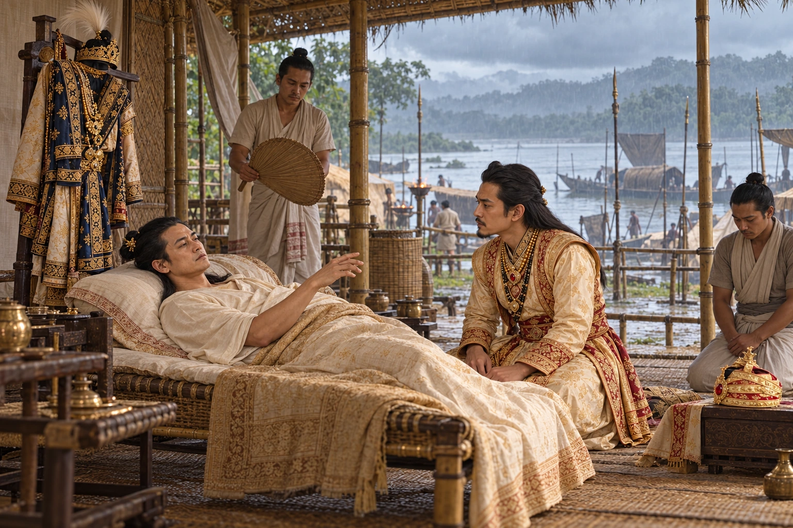

Death of Rudra Singha at the Guwahati Camp
27 August 1714 · The Tungkhungia kings

Eight days after falling ill, Rudra Singha dies in camp at Guwahati with the Bengal campaign unlaunched. On his deathbed he tells his son Siva Singha to take Krishnaram Bhattacharya as guru.
Rudra and Siva appear in an imagined Guwahati camp deathbed scene. Exact words, witnesses and furnishings are not authenticated.
People: Rudra Singha (Sukhrungphaa), Siva Singha (Sutanphaa)
Open this scene in the interactive archive · Follow this event on MAP